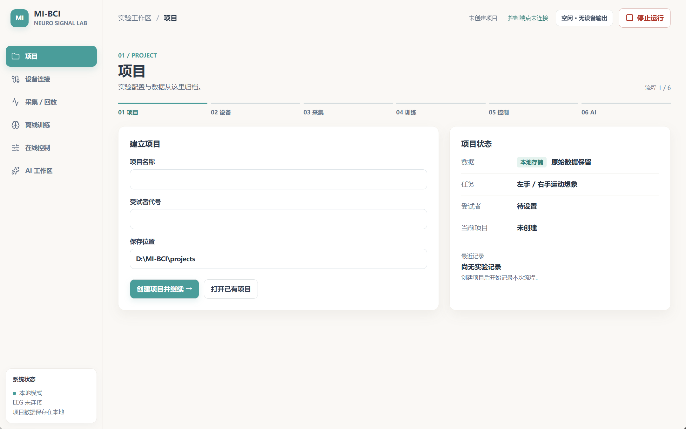
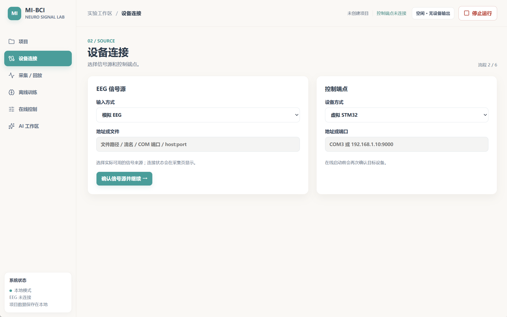
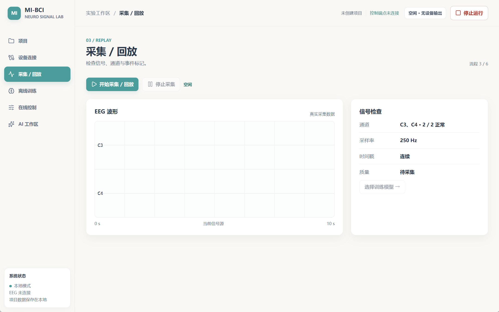
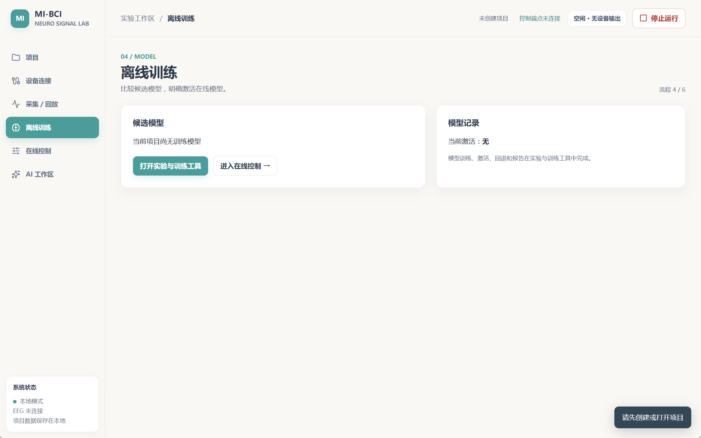
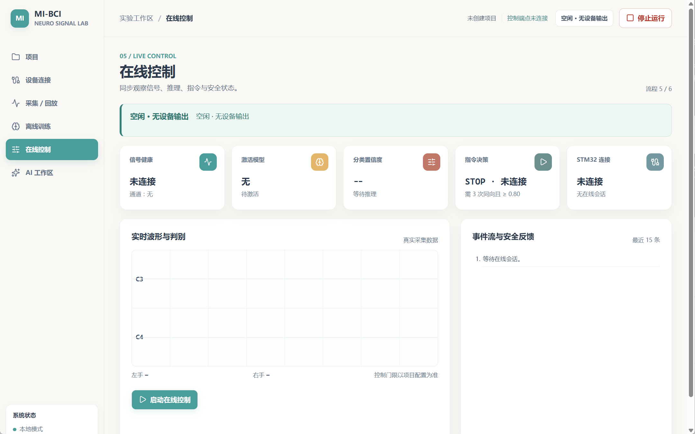
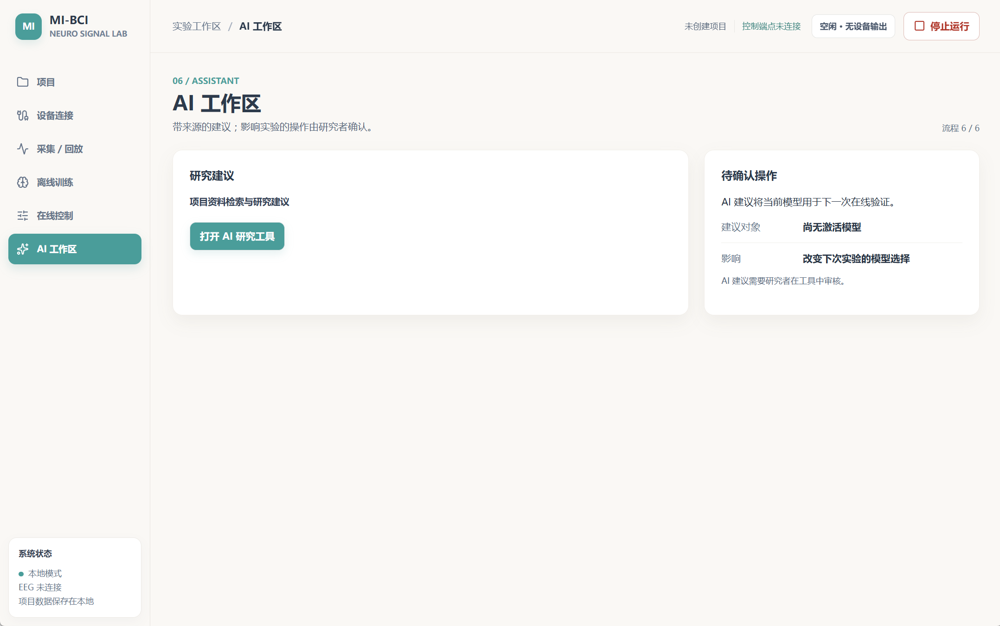
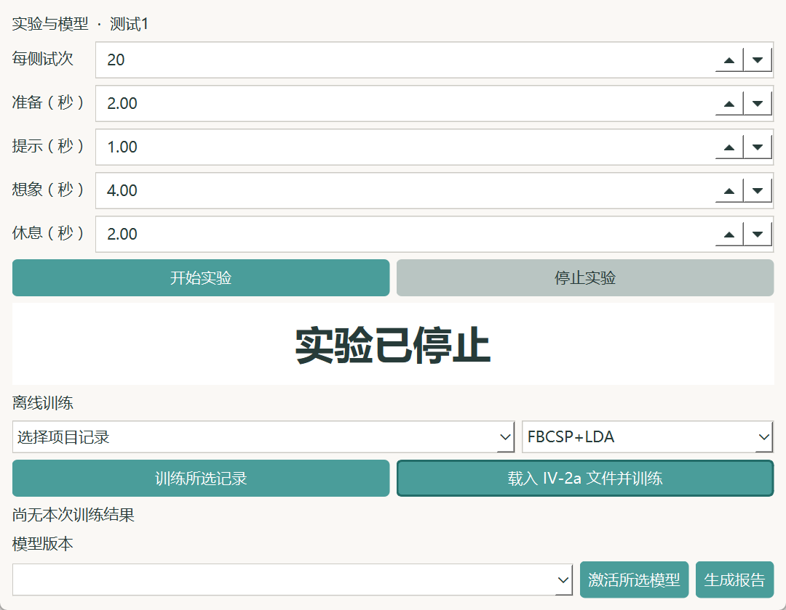

把脑电采集、运动想象实验、模型训练和在线控制，组织成可复现、可审计的脑机接口研究工作流。
脑电采集、实验脚本、训练代码、设备控制和研究资料彼此分散，难以复盘一次实验使用了哪些数据、模型和控制策略。
构建面向 Windows 的脑电研究工作台，覆盖项目管理、信号采集与回放、运动想象实验、离线训练和在线控制。
使用 Python、PySide6、SQLite 和可选的 NumPy、MNE-Python 等能力；保留原始来源、模型元数据和审计日志，支持去标识导出与 AI 辅助研究。
Windows
目标运行平台
SQLite
实验数据与审计日志存储
MNE
信号处理与分析支持
可审计
来源、模型元数据可追溯






